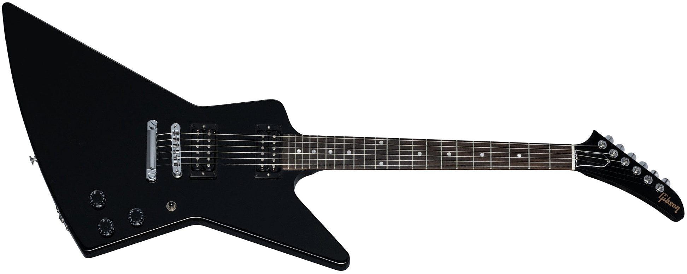
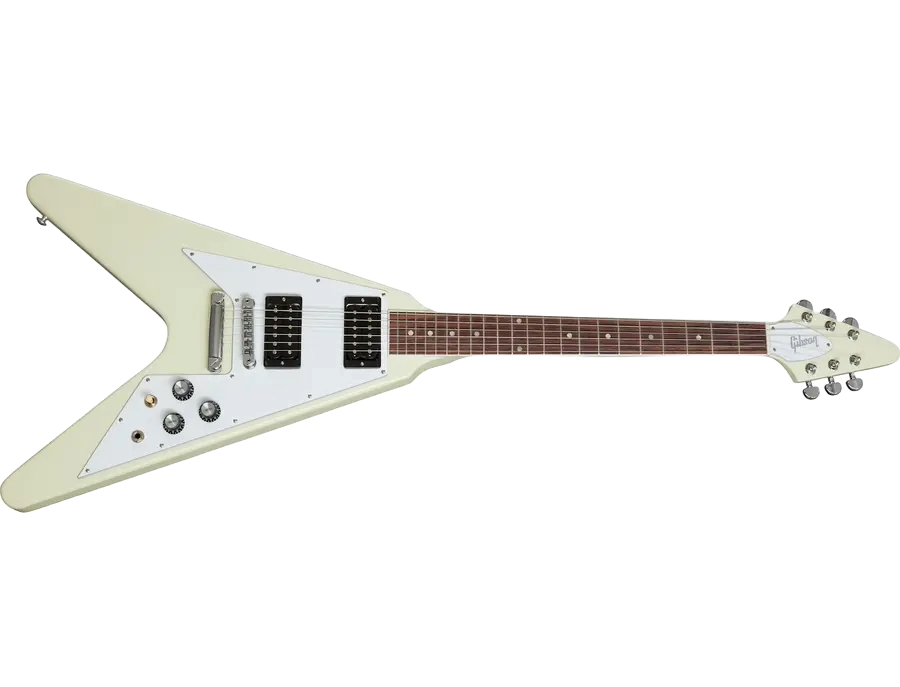
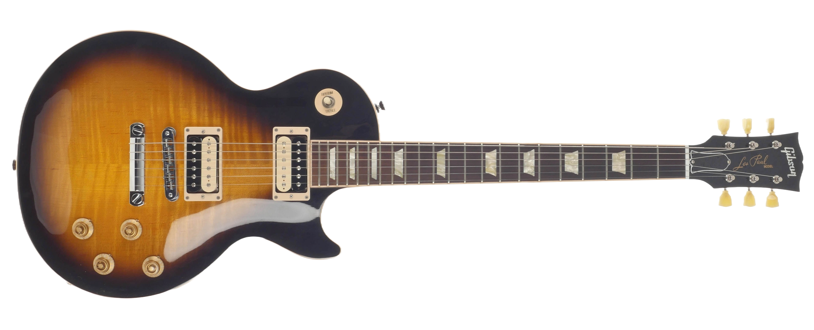

Comparison of Gibson Guitars
The Gibson Flying V, Explorer, and Les Paul each have their own unique characteristics that make them stand out in the world of electric guitars. Feel free to click on words you don't know to learn more!
| Feature | Gibson Explorer | Gibson Flying V | Gibson Les Paul |
|---|---|---|---|
| Appearance |  |  |  |
| Year Released | 1958 | 1958 | 1952 |
| Body Shape | Angular, offset | V-shaped | Single cutaway |
| Tone | Bright and aggressive | Sharp and focused | Warm and rich |
| Famous Users | James Hetfield, The Edge | Jimi Hendrix, Albert King | Jimmy Page, Slash |
| Music Genres | Metal, Hard rock | Blues, Rock, & Metal | Jazz, Rock, & Blues |